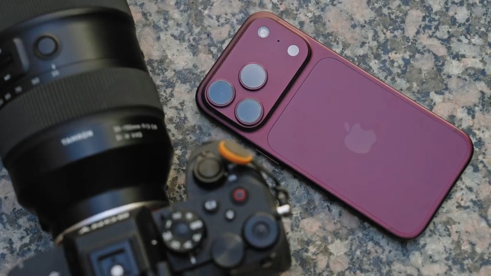
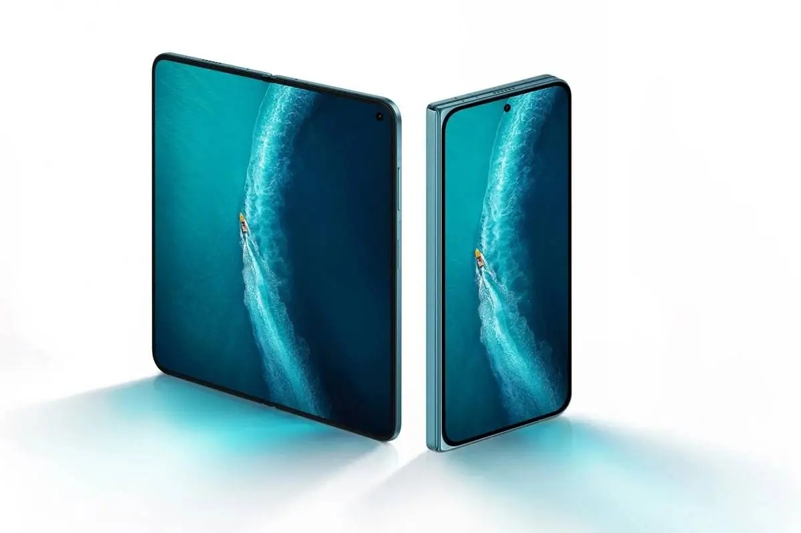
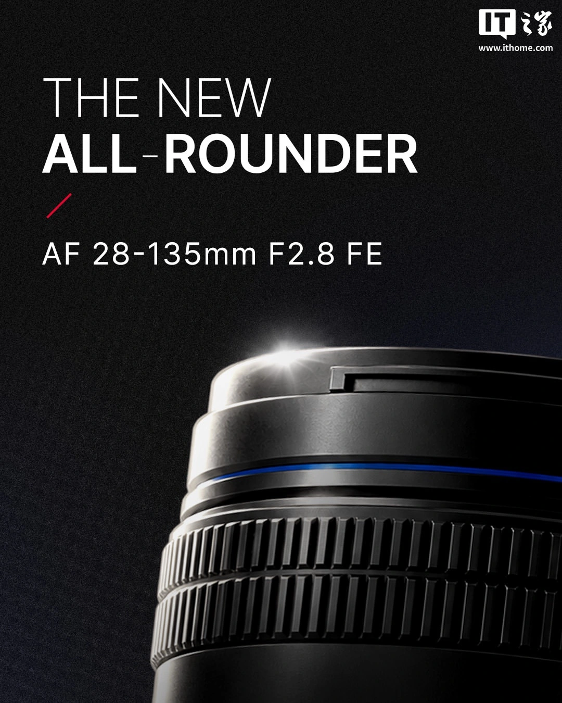

THE TECH EDIT
기술의 변화, 매일 한눈에.
카메라 · 스마트폰 · AI, 해외 테크 소식을 모아 전합니다.
최근 발행2026-10-04
새로 들어온 소식
LATEST STORIES

최신 뉴스
전체 3,463개 기사
Apple iPhone 듀오에 대항: Samsung Galaxy Z Fold9 폴더블 스마트폰 목표 두께 3.9mm/7.9mm

최초로 나란히 공개된 Samsung Galaxy S27 시리즈 4종 스마트폰 보호필름 유출

35% 인상: Samsung Galaxy A 시리즈 중 가장 저렴한 스마트폰 A17, 270달러로 인상
Samsung 디스플레이, 이달부터 Galaxy S27 시리즈 스마트폰용 AMOLED 패널 양산 계획

아이폰 18 프로 vs 오포 Find X9 프로: 애플 플래그십이 200달러 더 가치 있을까?

Huawei 리샤오룽: 루이잉 Z10 모듈 카메라 마운트는 탈착식 어댑터 링으로 구현되며, 미래 스마트폰 형태 변화 시 어댑터 링만 교체하면 호환 가능

Huawei 리샤오룽, 루이잉 Z10 모듈 카메라의 62mm 필터 미지원에 대해 "레드메이플 카메라 가림으로 인한 색상 편차 방지를 위한 의도적 설계"라고 답변

"자존심" 스마트폰, 더 강력한 "자존심" 칩으로 교체: Huawei Mate 90, 전 시리즈 타오 칩 탑재 발표, CCTV는 세계 반도체의 새로운 길을 열었다고 보도

클래식은 영원하다: Mate 90 시리즈 스마트폰에 스마트 로테이션 기능 부활, Huawei 스마트 센싱 기능의 핵심 퍼즐 조각 완성

Huawei Mate 90 Pro Max 플래그십 스마트폰 첫 업데이트 내용 공개, 쿼드 SIM 트리플 스탠바이, 3D 다이내믹 포토 등 기능 탑재

Huawei Mate 90 스마트폰 출시: Kirin 9030 플래그십 칩 탑재, 5999위안부터

Huawei Mate 90 시리즈 스마트폰, 게임 어시스턴트 알림 기능 최초 탑재, 속도 및 크기 등 사용자 지정 설정 지원

Honor 관하이타오, Magic9 시리즈 스마트폰 재고 부족에 대해 "가난이 우리의 상상력을 제한했다"고 답변

Canon EOS R7 V 유출: APS-C 영상 전용 카메라, 2027년 말 출시 예상

Valve Steam Frame 헤드셋용 타사 카메라 모듈 Arcturus Vision 출시: 고해상도 컬러 투과 효과 제공, 150달러에 판매

Huawei HarmonyOS 7.0 샤오이 스마트 비서 기능 조정, 향후 추가되는 기기 미지원

사진작가 Zavitz, Apple iPhone 18 Pro 인물 모드 테스트 결과 전문 카메라와 견줄 만해

vivo X Fold6 폴더블 디스플레이 스마트폰 글로벌 출시, 배터리 용량 중국 내수용보다 100mAh 감소

UGREEN, Apple iPhone 17/18 Pro 및 Max 모델용 3.7인치 컬러 E-Ink 스크린 스마트폰 케이스 278.8위안에 출시

삼양, AF 28-135mm F2.8 FE 카메라 렌즈 공식 발표: 무게 854g, 내년 2월 출시

Samsung, Galaxy S26 시리즈 스마트폰 권장 소매가 800~1800위안 인상, 7799위안부터 시작
검색 결과가 없습니다
다른 검색어를 입력하거나 필터를 초기화해 보세요.